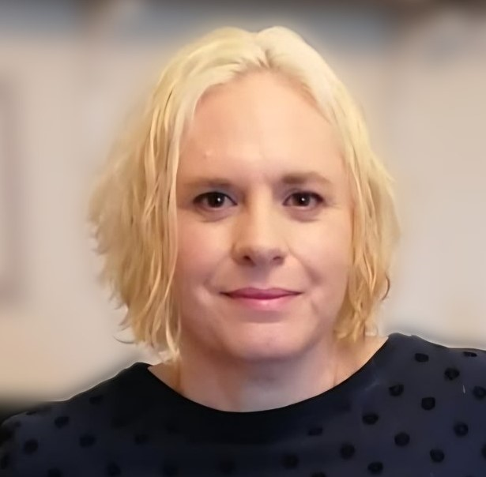

Human-Computer Interaction researcher, School of Computer Science, Northumbria University
I am a Human-Computer Interaction researcher and a Research Fellow on PROBabLE Futures, a UKRI-funded Responsible AI UK Keystone project at Northumbria University on probabilistic AI in policing and criminal justice. I use design fiction and speculative design to anticipate how AI may be used in law enforcement, and design and evaluate interfaces for AI-assisted decision-making.
My other research strand is accessibility. I study joint attention and social interaction between blind and visually impaired (BVI) people and sighted people, and how that understanding can shape the design of technology. I work with qualitative, video-based and co-design methods alongside disabled participants, including children, and this work has been published at CHI and ASSETS, including a CHI Best Paper Honourable Mention.
I have been teaching since 2004, from secondary school and A level through to university HCI workshops, and I bring professional experience from social work and support work with children, young people and disabled adults.
A UKRI-funded Responsible AI UK Keystone project on probabilistic AI in policing. I use design fiction and speculative design, work with stakeholders to map the AI ecosystem in law enforcement, and design and evaluate interfaces for AI-assisted decision-making, including a mock trial using AI outputs as evidence.
Email: katherine.jones@northumbria.ac.uk
School of Computer Science, Northumbria University, Newcastle upon Tyne